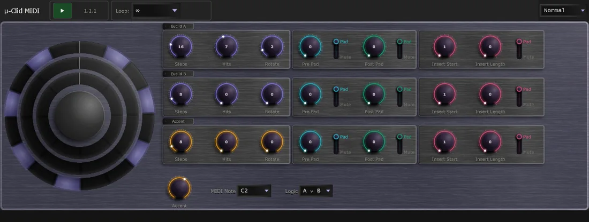
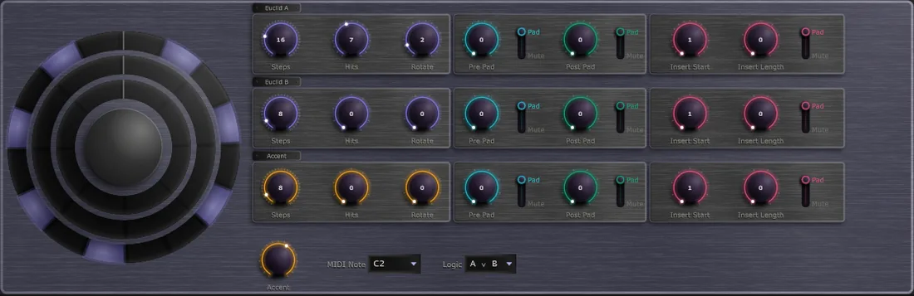

mu-Clid MIDI Manual: Euclidean MIDI Effect User Guide
mu-Clid MIDI: Euclidean MIDI Effect.
Prefer a file? Download the manual as a PDF. Back to mu-Clid MIDI · release notes · all guides.
1. Introduction
mu-Clid MIDI is a Euclidean rhythm sequencer that plays other instruments. It is a MIDI effect: it makes no sound of its own, and instead sends a MIDI note every time its rhythm fires. Put it in front of any synth, sampler or drum machine in your DAW and the pattern plays that instrument. It runs as a VST3 plug-in and a CLAP plug-in from Transwarp Development Project. There is no standalone version.
mu-Clid MIDI is free, with no licence key and no limits. It is the new name of mu-Clid Lite. Your existing projects keep working, and a project saved with mu-Clid Lite opens in mu-Clid MIDI with its rhythm, loop length, note and accent as you left them. If your DAW keeps favourites or effect chains by name, pick the plug-in again under its new name.
mu-Clid MIDI has its own icon, a glowing orange-red ring around a horned alien face, so you can tell it from mu-Clid at a glance in your plug-in list.
It plays one rhythm. For up to eight rhythms, each with its own sample and synth voice, mixer and effects, see mu-Clid. The two use the same Euclidean engine, so a rhythm sounds the same pattern in either.

2. What is Euclidean Sequencing?
Euclidean rhythms come from a 2004 paper by Godfried Toussaint, who noticed that an algorithm Euclid wrote down 2,300 years ago for finding the greatest common divisor of two numbers also produces patterns that look strikingly like the rhythms of the world's traditional music.
The idea is simple: given a number of steps and a smaller number of hits, distribute the hits as evenly as possible across the steps. With 16 steps and 4 hits you get a hit every fourth step — a classic four-on-the-floor pattern. With 8 steps and 3 hits the hits cannot divide evenly, so the algorithm spaces them as nearly evenly as it can: hit, rest, rest, hit, rest, rest, hit, rest. That is the Cuban tresillo.
mu-Clid MIDI gives the rhythm three independent Euclidean generators and combines them with logic: OR for layered patterns, AND for sparse coincidences, XOR for interlocking rhythms. Add rotation (shifting the pattern to start on a different step), padding (forcing silence at the start, end or middle) and an accent layer, and a few simple controls give you a vast range of grooves.
3. Installation
mu-Clid MIDI ships in two formats:
- VST3 — copy mu-Clid MIDI.vst3 to %ProgramFiles%\Common Files\VST3\
- CLAP — copy mu-Clid MIDI.clap to %ProgramFiles%\Common Files\CLAP\
The installer also removes the old mu-Clid Lite files. After installing, rescan plug-ins in your DAW.
4. Setting It Up in Your DAW
How you use a MIDI effect depends on your DAW, but the idea is always the same: the plug-in's MIDI output must reach the instrument you want to play.
- Add mu-Clid MIDI as a MIDI effect on a MIDI track, or on the same track as the instrument, ahead of it.
- If your DAW does not allow MIDI effects on an instrument track, put mu-Clid MIDI on its own track and route that track's MIDI output to the instrument.
- Press play. mu-Clid MIDI follows your DAW's transport, tempo and position, so the pattern stays in time with your project.
mu-Clid MIDI sends its notes on MIDI channel 1. It is a note generator: it does not use any notes sent into it.
5. The Window
The window has a transport bar at the top, the Rhythm Circle and Euclidean panel in the middle, a row of controls below them, and a status bar at the bottom that shows the name and value of the control you last touched. A size menu at the top right switches between Normal and Large. There are no presets, mixer or settings pages; your sound design happens in the instrument you are playing, and your pattern is saved with your DAW project.
Transport Bar
- mu-Clid MIDI logo — click it to open the About panel.
- Play, BPM and Position — show your DAW's play state, tempo and bar position. They follow the host and cannot be edited here.
- Loop dropdown — the master loop: how many steps the entire pattern runs before it starts again. Choices are the infinity symbol (free-running) or 16 to 256 steps in steps of 16. A counter beside it shows the current step and the loop length.
Rhythm Circle
The Rhythm Circle shows concentric rings, one per generator: Ring A (outermost, purple), Ring B (coral) and the accent ring (amber, dashed). While your DAW plays, the rings rotate so the current step is at the top. Filled steps are hits. Padded steps are drawn in their own colours, so you can see at a glance where a gap came from.
Update Check
mu-Clid MIDI can tell you when a newer version is available. Once a day it asks the transwarp.me website for the latest version number. When a newer version exists, a small Update available link appears at the right of the Status Bar. Hover over it to see which version is out and which one you have.
- Click the link to open the download page in your web browser. mu-Clid MIDI never downloads or installs anything itself. The link then stays hidden for that version and comes back only when a still newer one is released.
- Right-click the link and choose Hide this notice to hide it for that version without opening the page.
Privacy: the check is a plain request for a public file. It sends nothing about you: no name, no identifier, no version number and no details of your computer. As with any request to a website, the site can see your internet (IP) address, as it would if you opened the page in a browser. The plug-in compares the answer with its own version on your machine. To switch the check off, click the mu-Clid MIDI logo to open the About card and untick the Check for updates box. With the box unticked, mu-Clid MIDI sends no request at all and shows no link. The box is ticked by default.
6. The Euclidean Panel
The Euclidean panel has three rows of knobs, named Euclid A, Euclid B and Accent. All three rows have the same controls, in three boxes.
The first box:
- Steps (1 to 64, default 8) — total number of steps in the pattern, including any padding
- Hits (0 to Steps) — hits distributed as evenly as possible
- Rotate — shifts the pattern left or right by whole steps
The second box, Pad, forces silence at either end of the pattern. Each knob has a Pad | Mute switch beside it:
- Pre Pad — steps of silence at the start of the pattern
- Post Pad — steps of silence at the end of the pattern
The third box, Insert, forces silence inside the pattern, with its own Pad | Mute switch:
- Insert Start — the step where the silent section begins, counted from 1. With a Pre Pad of 4 in Pad mode, the first step you can insert at is 5.
- Insert Length (0 to 8) — how many steps the silent section lasts.
What the Pad | Mute switch does: in Pad mode the silent steps are taken out of the pattern, and all the hits are spread over the steps that remain. In Mute mode the pattern stays spread over every step, and any hits that land in the silent steps are silenced. The Status Bar spells out the current setting when you flip a switch.
Ranges update dynamically: when Steps changes, Hits, Rotate and Insert Start clamp to fit, and the pads and insert can never use more steps than the pattern has.
Logic
The Logic dropdown at the bottom of the window sets how Euclid A and Euclid B combine into one pattern. Its five choices use logic symbols; the Status Bar spells each one out:
- A ∨ B (OR) — fires if either A or B fires
- A ∧ B (AND) — fires only when both A and B fire on the same step
- A ⊕ B (XOR) — fires when exactly one of A or B fires
- A∧¬B (A not B) — fires when A fires and B does not
- B∧¬A (B not A) — fires when B fires and A does not
Accent Layer
The Accent row has no logic relationship with A or B. When the accent ring fires on the same step as a combined A and B hit, that hit is accented, and is sent with a higher velocity (see MIDI Output).

7. MIDI Output
Two controls in the row at the bottom of the window set what is sent:
- MIDI Note — the note sent on every hit, chosen from a list from C-1 to G9 (middle C is C4). Default C2 (note 36), a common kick-drum note.
- Accent — 0 to 100 percent, default 0. It sets how the velocity differs between accented and plain hits. In the lower half of the range, accented hits get louder, from velocity 100 up to 127, while plain hits stay at 100. In the upper half, accented hits stay at 127 and plain hits get softer, down to velocity 75. At 0 every hit is played at velocity 100.
Each note lasts about 20 milliseconds, which suits drums and plucks. Synths with a long release will ring on after the note ends; set the release in the instrument. mu-Clid MIDI never leaves a note hanging: if you bypass the plug-in while a note is sounding, its note-off is still sent.
8. Saving and Restoring
Everything you set is saved with your DAW project and restored when you open it. You can also automate the controls from your DAW.
When a project is restored, mu-Clid MIDI first sets every parameter to its default, then applies what was saved. A project therefore never inherits leftovers from the plug-in instance it is loaded into, and unknown or out-of-date entries in a saved project are simply ignored. The rhythm's name and colour from an older project are restored too.
9. Technical Specifications
- Formats: VST3, CLAP (Windows). No standalone version, no audio.
- Rhythms: 1
- Steps per generator: 1 to 64
- Output: one MIDI note per hit on channel 1, note 0 to 127, about 20 ms long
- Master loop: free-running or 16 to 256 steps
Hosts That Do Not Run an Event Loop
mu plugins need the host to run its normal event loop, as every ordinary DAW does. A few headless or offline-only renderers do not. In those, changes made by MIDI or a controller, MIDI program changes, and preset loads made while playing may not take effect until the host runs its event loop. If you hit this, load presets while the transport is stopped, or render with a host that runs its event loop.
Prefer a file? Download the manual as a PDF. Back to mu-Clid MIDI · release notes · all guides.